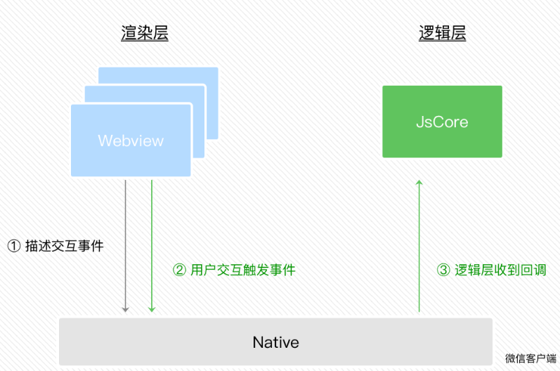

3.5.1 什么是事件
UI界面的程序需要和用户互动，例如用户可能会点击你界面上某个按钮，又或者长按某个区域，这类反馈应该通知给开发者的逻辑层，需要将对应的处理状态呈现给用户。
有些时候程序上的“行为反馈”不一定是用户主动触发的，例如我们在视频video播放的过程中，播放进度是会一直变化的，这种反馈也应该通知给开发者做相应的逻辑处理。
在小程序里边，我们把这种“用户在渲染层的行为反馈”以及“组件的部分状态反馈”抽象为渲染层传递给逻辑层的“事件”，如图3-7所示。

图3-7 渲染层产生用户交互事件传递给逻辑层
我们给出一个简单的处理事件的小程序代码。
代码清单3-18 事件处理示例
<!-- page.wxml -->
<view id="tapTest" data-hi="WeChat" bindtap="tapName"> Click me! </view>
// page.js
Page({
tapName: function(event) {
console.log(event)
}
})
事件是通过bindtap这个属性绑定在组件上的，同时在当前页面的Page构造器中定义对应的事件处理函数tapName，当用户点击该view区域时，达到触发条件生成事件tap，该事件处理函数tapName会被执行，同时还会收到一个事件对象event。